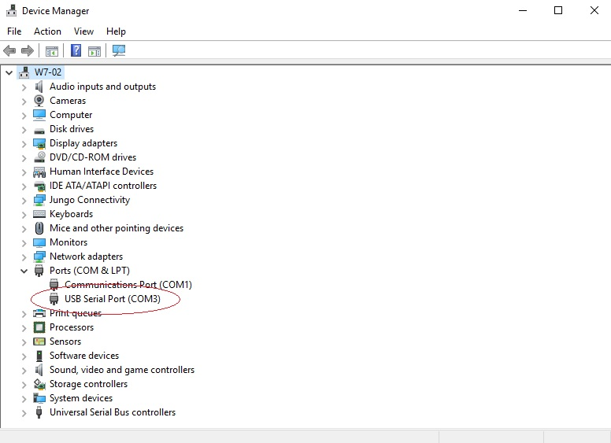

Boot Program
The Boot Program allows the end user to upload/download data or compiled programs to the SAM4S memories. This method allows you to send compiled programs to the SAM4S memory without the use of an expensive In System Programming like the Atmel ICE.
There are two methods to connect and upload your program - through USB or UART0. USB has specific crystal or external clock requirements (11.289MHz, 12.000MHz, 16.000MHz, 18.432MHz), but UART0 has no hardware requirements, but to connect it to your PC you'll need a USB to Serial converter or cable.
All of the custom SAM4S boards I have do not have any of the required crystal speeds to try out USB, so instead, I will use UART0 with the FTDI-232R-3V3 cable.
Setup
- Go to the Microchip site to download SAM-BA. I will use v2.18.
- Install SAM-BA
- Compile your project in Atmel Studio and take note of the path the project is in.
Wiring
Connect the FTDI cable to the PC and ensure the drivers are installed. Check windows device manager to see what the COM port is: press 'windows key + r' type devmgmt.msc and press enter. Expand Ports (COM and LPT). See the image below:
I have my USB to serial cable as COM3
Connect the yellow TX wire to PA10 (RX), orange RX wire to PA9 (TX), and connect the black ground pin to the common ground of the SAM4S.Connect PB12 to 3.3V that is powering the SAM4S and leave it connected until after it has been programmed. Power up the SAM4S
Run SAM-BA

From the drop down menu choose your COM port (COM3 in my case)
Choose your MCU. Mine is ATSAM4S16B, so I choose at91sam4s16-ek.
Click Connect.